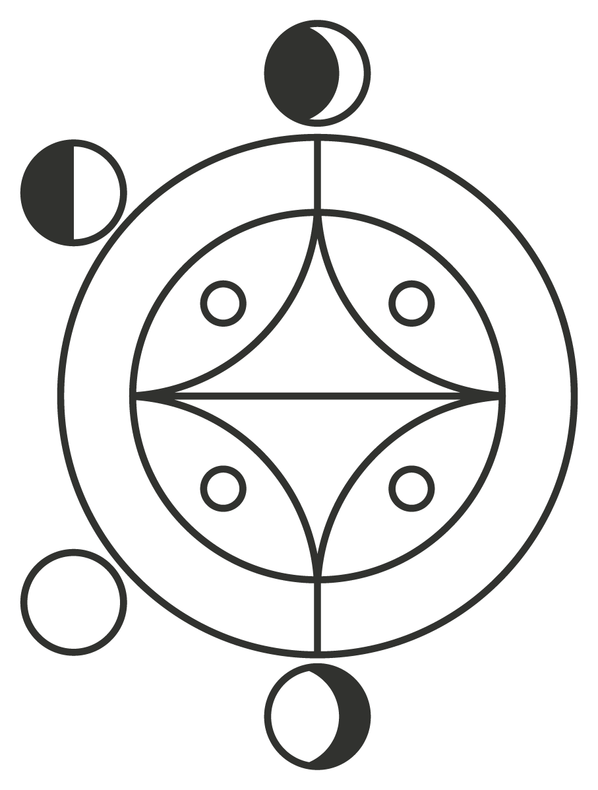

Quiénes somos
De un programa a una fundación propia
Fundación Abriendo Oportunidades nace en Guatemala para dar continuidad, con gobernanza y voz propia, al trabajo que por más de 20 años impulsó el programa Abriendo Oportunidades junto al Population Council: espacios seguros liderados por mentoras indígenas en comunidades del altiplano occidental.
Abrir camino con evidencia
Acompañar a niñas y adolescentes indígenas de Guatemala para que permanezcan en la escuela, decidan sobre su cuerpo y su futuro, y vivan libres de violencia — a través de espacios seguros guiados por mentoras de su propia comunidad y sostenidos por evidencia rigurosa.
Un ciclo que se repite y se amplía
Que cada generación de niñas mayas del altiplano occidental crezca con más oportunidades que la anterior, y que el modelo de mentoría entre pares siga replicándose en nuevas comunidades y países.
Cómo trabajamos
Tres ejes transversales
Heredados de las guías curriculares del programa y presentes en cada espacio seguro.
Derechos humanos
Cada niña conoce y ejerce sus derechos a la educación, la salud y una vida libre de violencia.
Perspectiva de género
Cuestionamos las normas que limitan las decisiones de las niñas sobre su cuerpo y su futuro.
Interculturalidad
Los espacios seguros se viven en el idioma y desde la cosmovisión de cada comunidad maya.
Nuestra historia
Dos décadas de evidencia, un nuevo ciclo
Piloto de Abriendo Oportunidades con una beca inicial de UNFPA y el Population Council.
Primera evaluación de impacto: el modelo de mentoras entre pares demuestra que puede escalar.
Un ensayo aleatorizado (cluster-RCT) mide una reducción significativa de la violencia física.
Más de 20 años después, nace la Fundación para dar continuidad propia a esta evidencia.
Nuestra aliada de investigación
Population Council, Guatemala
El Population Council diseñó y evaluó el programa Abriendo Oportunidades durante más de dos décadas. La Fundación da continuidad a esa evidencia y mantiene una relación cercana de colaboración técnica con su equipo en Guatemala.
Visitar Population Council Guatemala
Equipo y gobernanza
En construcción
Estamos documentando la junta directiva, el equipo técnico y las mentoras que dan vida a la Fundación. Esta sección se actualizará con fotografías y semblanzas próximamente.